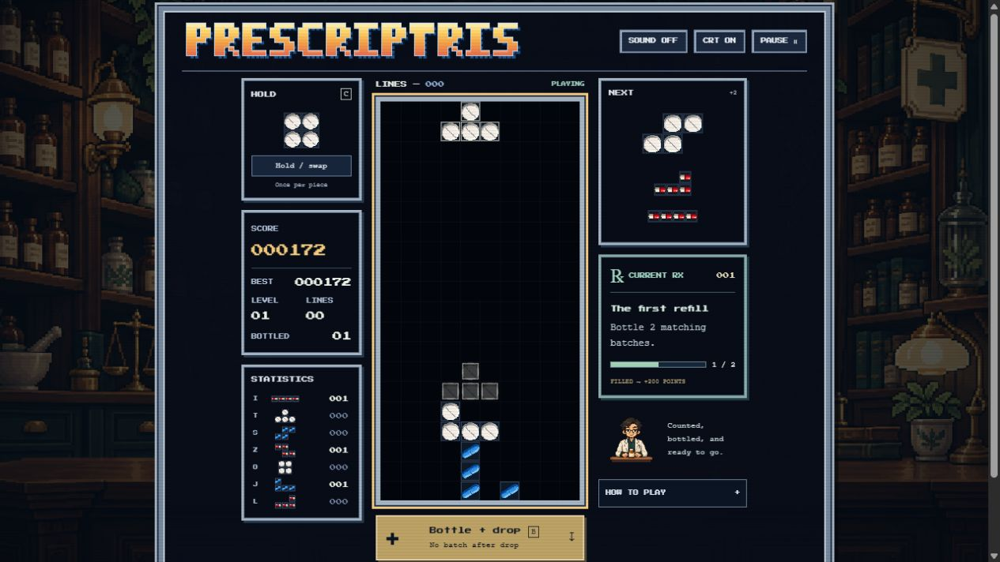

LINES — 000READY
Space drops · B bottles + drops · C holds

Space drops · B bottles + drops · C holds
Prescriptris is a free, single-player falling-block puzzle game set in a retro pharmacy. Stack pill pieces, clear horizontal rows, and collect matching squares with the bottling mechanic.
Play online on desktop, tablet, or phone. Use a keyboard or the on-screen touch controls. There is no download or account required.

A 2×2 batch earns 80 points, a 3×3 earns 240, and a 4×4 earns 600, multiplied by your level. Clear 10 rows to level up. Complete the current prescription for an extra bonus.
Keyboard: ←/→ or A/D to move; ↑/X to rotate clockwise; Z to rotate back; ↓/S to soft drop; Space to hard drop; B to bottle and drop; C/Shift to hold; P/Escape to pause.
Phone or tablet: use the arrow, rotate, and Drop buttons beneath the tray. Hold/swap and Bottle + drop have their own buttons. Choose Continue after an automatic pause.
Some artwork could not load. The game is using simple pill tiles; refresh to retry.